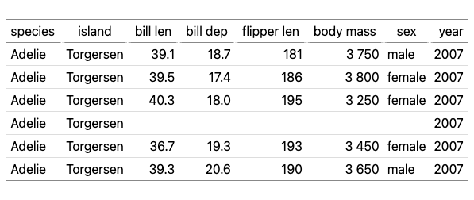

The table below is a self-documenting cheat sheet: every function in this
package is used to build it, and each function’s name is placed exactly where
that function acts. The title reads lt_header(title = ...) because
lt_header() put it there; every column header is the name of the function
that shaped that column; the row-group label is lt_group(); the footnote text
is lt_footnote(); and so on. To learn what a function does, find its name in
the table and look at what it is doing to the cell around it.
d = data.frame(
Grp = paste("Group", c("A", "A", "B", "B")),
Label = c("<a href='#sec:cheatsheet'>lt(): make a table</a>",
"lt_indent(): child A",
"lt_indent(): child B", "lt_style() + lt_css()"),
Fmt = c(1234567.89, -0.51234, Inf, -Inf),
Sub = c(0, NA, 3.14, 0.0002),
Date = as.Date(c("2024-01-15", "2024-02-20", "2024-03-25", "2024-04-30")),
Align = c(1, 22, 333, 4),
Width = c("lt_width()", "sets", "column", "widths"),
Est = c("0.61", "0.79", "0.45", "0.90"),
CI = c("(0.40, 0.82)", "(0.57, 1.01)", "(0.20, 0.70)", "(0.71, 1.14)")
)
library(lt)
lt(d, auto_format = FALSE) |>
# lt_group(): the "lt_group()" row-group header on the left
lt_group(~ Grp) |>
# lt_header(): the title and subtitle at the top literally name themselves
lt_header(
title = "lt_header(title = ...)",
subtitle = "lt_header(subtitle = ...)"
) |>
# lt_merge(): fold CI into Est to make the "lt_merge()" column
lt_merge(~ Est + CI, pattern = "{1} {2}") |>
# lt_spanner(): the "lt_spanner()" label above two columns
lt_spanner(`lt_spanner()` ~ Fmt + Sub) |>
# lt_label(): every column header is renamed to the function acting on it
lt_label(
Grp = "lt_group()", Width = "lt_width()", Label = "lt_label(old = new, ...)",
Fmt = "lt_format()", Sub = "lt_sub()", Date = "lt_date()",
Align = "lt_align()", Est = "lt_merge()"
) |>
# lt_html(): render the "Label" column as raw HTML (note the link in row 1)
lt_html(~ Label) |>
# lt_align(): center the "lt_align()" column
lt_align(~ Align, "center") |>
# lt_width(): the "lt_width()" column is where widths are set
lt_width(Width = "9em", Label = "16em") |>
# lt_format(): round and add a thousands separator
lt_format(~ Fmt, decimals = 1, big_mark = ",") |>
# lt_date(): format the "lt_date()" column
lt_date(~ Date, options = list(
year = "numeric", month = "short", day = "numeric", timeZone = "UTC"
)) |>
# lt_sub(): NA/zero/small are replaced with self-naming placeholders
lt_sub(~ Sub, missing = "n/a", zero = "—",
small = 0.01, small_text = "< 0.01") |>
# lt_indent(): indent the two "lt_indent()" child rows
lt_indent(c(2, 3), level = 1) |>
# lt_style() + lt_css(): style the cell that names them
lt_style("Label", rows = 4L, class = "hl") |>
lt_css(.hl = list(fontWeight = "bold", color = "#06c")) |>
# lt_footnote(): provide the footnote text
lt_footnote("lt_footnote() can add a footnote anywhere.", "title") |>
lt_footnote(I("<code>Alt + Click</code> a table to toggle raw values."), "subtitle") |>
# I(): wrapping text in I() marks it as raw HTML (here, a bold tag)
lt_footnote(I("Wrap text in <code>I()</code> for raw HTML."), "column", "Label") |>
# lt_move(): explain it via a footnote, since it has no column of its own here
lt_footnote("lt_move() can reorder columns as desired.", "column", "Est") |>
# lt_note(): the footer note names itself and lt_export()
lt_note("lt_note() — and lt_export() saves this table to HTML/PDF/PNG.")
Pass any data frame to lt():
tbl_cars = lt(head(mtcars))
tbl_cars
By default, column names are cleaned for display by replacing . and
_ with spaces. Use auto_label = FALSE to show raw names, or
lt_label() to override specific columns:
tbl_iris = lt(head(iris))
tbl_iris
lt(head(iris), auto_label = FALSE)
tbl_iris |> lt_label(Sepal.Length = "Length (cm)", Sepal.Width = "Width (cm)")
tbl_iris |>
lt_header(title = "Iris Measurements", subtitle = "First six observations")
By default, numeric columns are right-aligned and character columns are
left-aligned. Override with lt_align():
tbl_cars |> lt_align(~ mpg + cyl, "center") |> lt_width(mpg = "6em")
By default, lt() automatically formats numeric columns: rounding to
~4 significant digits (adapting decimal places to magnitude), adding a
thin-space thousands separator, using a typographic minus (U+2212) for
negatives, detecting percentage columns (names containing %, _pct,
or _percent) and multiplying by 100 with a % suffix, and skipping
year-like columns. Set auto_format = FALSE to display raw values:
d = data.frame(
Year = c(2020, 2021, 2022),
Revenue = c(1234567.89, 2345678.12, -3456.789),
Margin_pct = c(0.1234, 0.0567, 0.2345)
)
lt(d)
lt(d, auto_format = FALSE)
tbl_cars |> lt_format(~ mpg + disp, decimals = 1)
Control the number of decimal places with decimals:
d = data.frame(
Metric = c("Revenue", "Costs", "Profit"),
Q1 = c(1234567.891, 987654.321, 246913.570),
Q2 = c(1345678.912, 1012345.678, 333333.234)
)
lt(d) |>
lt_format(~ Q1 + Q2, decimals = 2)
lt(d) |>
lt_format(~ Q1 + Q2, decimals = 0, big_mark = ",")
Use prefix and suffix to prepend or append symbols to formatted values:
lt(d) |>
lt_format(~ Q1 + Q2, decimals = 2, big_mark = ",", prefix = "$")
d2 = data.frame(
Material = c("Steel", "Aluminum", "Copper"),
Weight = c(1250, 340.5, 89.12)
)
lt(d2) |> lt_format(~ Weight, decimals = 1, suffix = " kg")
Format Date or POSIXt columns using JavaScript’s native Date methods.
The default uses toLocaleDateString().
Note: The formatted date may differ from the input depending on the
viewer’s timezone. new Date("2024-01-15") is parsed as UTC midnight,
but toLocaleDateString() converts to local time — so 2024-01-15
displays as 2024-01-14 at GMT-6. Pass options = list(timeZone = "UTC") to avoid this.
d = data.frame(
Event = c("Launch", "Update", "Release"),
Date = as.Date(c("2024-01-15", "2024-06-30", "2024-12-01"))
)
lt(d) |> lt_date(~ Date)
Pass locale and options for Intl.DateTimeFormat control:
lt(d) |> lt_date(~ Date, locale = "zh-CN",
options = list(year = "numeric", month = "long", day = "numeric",
weekday = "long", timeZone = "UTC"))
lt(d) |> lt_date(~ Date, method = "toDateString")
For datetime values, include time components in options:
d = data.frame(
Event = c("Start", "End"),
Time = as.POSIXct(c("2024-01-15 09:30:00", "2024-01-15 17:45:00"), tz = "UTC")
)
lt(d) |> lt_date(~ Time, locale = "en-US", options = list(
year = "numeric", month = "short", day = "numeric",
hour = "2-digit", minute = "2-digit"
))
d = data.frame(
Metric = c("HR", "p-value", "Events", "Rate"),
Value = c(0.62, 0.0003, 0, NA)
)
lt(d) |>
lt_format(~ Value, decimals = 2) |>
lt_sub(~ Value, missing = "n/a", zero = "—", small = 0.001, small_text = "< 0.001")
Inf and -Inf render as ∞ and −∞. Auto-formatting uses a typographic minus
(U+2212) for −∞; raw (unformatted) columns use an ASCII hyphen:
d = data.frame(
Metric = c("Lower bound", "Upper bound", "Rate", "Missing"),
Value = c(-Inf, Inf, 1.5, NA)
)
lt(d) |> lt_format(~ Value, decimals = 2)
tbl_cars |>
lt_header(title = "Motor Trend Cars") |>
lt_footnote("Source: 1974 Motor Trend US magazine.", "title") |>
lt_footnote("Miles per US gallon.", "column", "mpg")
Notes appear in the footer below numbered footnotes:
tbl_cars |> lt_note("Data from the 1974 Motor Trend US magazine.")
Pass a column name to lt_group() to partition rows by that column’s
values. The column is removed from the body and its values become group
headers:
d = data.frame(
Region = c("East", "East", "West", "West", "West"),
City = c("New York", "Boston", "Seattle", "Portland", "Denver"),
Population = c(8336817, 675647, 737015, 652503, 715522)
)
lt(d) |>
lt_group(~ Region) |>
lt_header(title = "US Cities by Region") |>
lt_format(~ Population, big_mark = ",")
By default (sep = 'auto'), lt_group() switches from rowspan cells to
full-width separator rows when any group label exceeds 20 characters:
d = data.frame(
Department = c(
"Cardiovascular Research", "Cardiovascular Research",
"Biostatistics", "Biostatistics"
),
Trial = c("ATLAS-2", "BEACON", "PRIME-1", "NEXUS"),
N = c(450, 320, 280, 510)
)
# "Cardiovascular Research" (23 chars) triggers separator mode automatically
lt(d) |> lt_group(~ Department)
# force rowspan mode with sep = FALSE
lt(d) |> lt_group(~ Department, sep = FALSE)
Pass multiple columns to lt_group() to render hierarchical rowspan
cells on the left side of the table:
d = data.frame(
Region = c("East", "East", "East", "West", "West", "West"),
State = c("NY", "NY", "MA", "WA", "WA", "OR"),
City = c("New York", "Buffalo", "Boston", "Seattle", "Spokane", "Portland"),
Population = c(8336817, 278349, 675647, 737015, 228989, 652503)
)
lt(d) |>
lt_group(~ Region + State) |>
lt_header(title = "Cities by Region and State") |>
lt_format(~ Population, big_mark = ",")
Use sep = TRUE to render groups as full-width separator rows instead of
rowspan cells:
d = data.frame(
Region = c("East", "East", "West", "West", "West"),
City = c("New York", "Boston", "Seattle", "Portland", "Denver"),
Population = c(8336817, 675647, 737015, 652503, 715522)
)
lt(d) |>
lt_group(~ Region, sep = TRUE) |>
lt_header(title = "US Cities by Region") |>
lt_format(~ Population, big_mark = ",")
Use named arguments in lt_group() for explicit control over which rows
belong to each group:
tbl_cars |> lt_group("First three" = 1:3, "Last three" = 4:6)
d = data.frame(
arm = c("Placebo", "Placebo", "Treatment", "Treatment"),
stat = c("n", "Mean", "n", "Mean"),
value = c("30", "4.2", "31", "6.8")
)
lt(d) |>
lt_group(~ arm, sep = TRUE) |>
lt_group("Treatment", "Placebo")
Indent the first column to show hierarchy:
d = data.frame(
label = c("Any AE", "SOC: Cardiac", "Tachycardia", "Bradycardia",
"SOC: GI", "Nausea"),
n_pct = c("45 (67%)", "30 (45%)", "15 (22%)", "18 (27%)", "20 (30%)", "12 (18%)")
)
lt(d) |>
lt_header("Adverse Events", "Safety Population") |>
lt_indent(c(2, 5), level = 1) |>
lt_indent(c(3, 4, 6), level = 2)
A spanner groups contiguous columns under a shared label:
tbl_iris |>
lt_spanner(Sepal ~ Sepal.Length + Sepal.Width) |>
lt_spanner(Petal ~ Petal.Length + Petal.Width)
When column names share a common prefix separated by . or _, call
lt_spanner() with no arguments to infer spanners automatically:
tbl_iris |> lt_spanner()
tbl_iris |>
lt_header(title = "Iris Dataset") |>
lt_spanner(Sepal ~ Sepal.Length + Sepal.Width) |>
lt_spanner(Petal ~ Petal.Length + Petal.Width) |>
lt_format(~ Sepal.Length + Sepal.Width + Petal.Length + Petal.Width, decimals = 1)
Combine columns into one using a pattern. Source columns are hidden automatically:
d = data.frame(
stat = c("Age", "Weight", "Height"),
n = c(67, 65, 64),
pct = c(100, 97.0, 95.5)
)
lt(d) |>
lt_format(~ pct, decimals = 1) |>
lt_merge(~ n + pct, pattern = "{1} ({2}%)") |>
lt_label(n = "n (%)")
<< >>Wrap pattern sections in << and >> to drop them when any referenced
column is empty/NA:
d = data.frame(
endpoint = c("Primary", "Secondary", "Tertiary"),
est = c(0.61, 0.79, 0.45),
ci_lo = c(0.40, 0.57, NA),
ci_hi = c(0.82, 1.01, NA)
)
lt(d) |>
lt_format(~ est + ci_lo + ci_hi, decimals = 2) |>
lt_merge(~ est + ci_lo + ci_hi, pattern = "{1}<< ({2}, {3})>>") |>
lt_label(est = "Estimate (95% CI)")
tbl_cars |> lt_width(mpg = "8em", cyl = "5em", disp = "8em", hp = "6em")
tbl_iris |> lt_move(~ Petal.Length + Petal.Width, after = NULL)
Highlight specific cells with bold, color, background, or any CSS property (camelCase or dash-case):
d = data.frame(
Endpoint = c("Primary", "Secondary", "Exploratory"),
HR = c(0.62, 0.79, 0.91),
P = c(0.001, 0.042, 0.38)
)
lt(d) |>
lt_format(~ HR, decimals = 2) |>
lt_format(~ P, decimals = 3) |>
lt_style("P", rows = 1:2L, bold = TRUE, color = "#06c") |>
lt_style("HR", rows = 1L, bg = "#e8f4e8", borderBottom = "2px solid #4a4")
Apply styles based on cell values using a JavaScript test function. Use
class to assign CSS classes, then define the rules with lt_css():
d = data.frame(
Endpoint = c("Primary", "Secondary", "Exploratory"),
HR = c(0.62, 0.79, 1.05),
P = c(0.001, 0.042, 0.38)
)
lt(d) |>
lt_format(~ HR + P, decimals = 3) |>
lt_style("HR", test = "v => v < 1", class = "good") |>
lt_style("P", test = "v => v < 0.05", class = "sig") |>
lt_css(.good = list(color = "green"), .sig = list(fontWeight = "bold"))
d = data.frame(
arm = c("Treatment", "Control", "Treatment"),
n = c(30, NA, 28),
response = c(0.67, NA, NA)
)
lt(d) |>
lt_style(test = "v => v == null", class = "na") |>
lt_css(.na = list(background = "#fee"))
By default, every cell value and text label is HTML-escaped, so characters
like <, >, and & render as literal text. To emit raw HTML instead —
links, emphasis, images, and so on — use lt_html() to mark whole body
columns, and wrap any other text (titles, labels, footnotes, notes,
spanners) in I():
d = data.frame(
Package = c(
"<a href='https://cran.r-project.org/package=lt'>lt</a>",
"<a href='https://cran.r-project.org/package=xfun'>xfun</a>"
),
Status = c("<b style='color:#090'>stable</b>", "<i>active</i>")
)
lt(d) |>
lt_html(~ Package + Status) |>
lt_header(I("Packages <sup>★</sup>")) |>
lt_label(Package = I("Name<sup>*</sup>")) |>
lt_note(I("See <a href='https://yihui.org/'>the author</a>."))
d = data.frame(
Group = c("Treatment", "Treatment", "Control", "Control"),
Endpoint = c("Primary", "Secondary", "Primary", "Secondary"),
Estimate = c(0.6123, 0.7891, 0.4567, 0.5432),
CI_Lower = c(0.4012, 0.5678, 0.2345, 0.3210),
CI_Upper = c(0.8234, 1.0104, 0.6789, 0.7654),
P_Value = c(0.0012, 0.0456, 0.1234, 0.2345)
)
lt(d) |>
lt_group(~ Group) |>
lt_header(
title = "Study Results",
subtitle = "Primary and secondary endpoints"
) |>
lt_spanner(`95% CI` ~ CI_Lower + CI_Upper) |>
lt_format(~ Estimate + CI_Lower + CI_Upper, decimals = 3) |>
lt_format(~ P_Value, decimals = 4) |>
lt_footnote("Two-sided p-value from log-rank test.", "column", "P_Value")
lt_export() saves a table to a file. The format is chosen from the file
extension: .html, .pdf, or (otherwise) .png. PDF and PNG are rendered in
a headless Chromium browser.
tbl = lt(head(penguins))
lt_export(tbl, "01-lt.png")
#> [1] "01-lt.png"

1 A table exported to PNG.
lt_export(tbl, "01-lt.pdf")
#> [1] "01-lt.pdf"
For .html output, the table can be baked into a static <table> (built once
by running the lt.js runtime, so the saved file needs no JavaScript to view).
Set tidy = TRUE to pretty-print it with line breaks and indentation:
lt_export(tbl, NA, fragment = TRUE, css = FALSE, tidy = TRUE)
<div class="lt-wrap">
<table class="lt-table">
<thead>
<tr>
<th scope="col">species</th>
<th scope="col">island</th>
<th scope="col" class="al-r">bill len</th>
<th scope="col" class="al-r">bill dep</th>
<th scope="col" class="al-r">flipper len</th>
<th scope="col" class="al-r">body mass</th>
<th scope="col">sex</th>
<th scope="col" class="al-r">year</th>
</tr>
</thead>
<tbody>
<tr>
<td>Adelie</td>
<td>Torgersen</td>
<td class="al-r">39.1</td>
<td class="al-r">18.7</td>
<td class="al-r">181</td>
<td class="al-r" title="3750">3 750</td>
<td>male</td>
<td class="al-r">2007</td>
</tr>
<tr>
<td>Adelie</td>
<td>Torgersen</td>
<td class="al-r">39.5</td>
<td class="al-r">17.4</td>
<td class="al-r">186</td>
<td class="al-r" title="3800">3 800</td>
<td>female</td>
<td class="al-r">2007</td>
</tr>
<tr>
<td>Adelie</td>
<td>Torgersen</td>
<td class="al-r">40.3</td>
<td class="al-r" title="18">18.0</td>
<td class="al-r">195</td>
<td class="al-r" title="3250">3 250</td>
<td>female</td>
<td class="al-r">2007</td>
</tr>
<tr>
<td>Adelie</td>
<td>Torgersen</td>
<td class="al-r"></td>
<td class="al-r"></td>
<td class="al-r"></td>
<td class="al-r"></td>
<td></td>
<td class="al-r">2007</td>
</tr>
<tr>
<td>Adelie</td>
<td>Torgersen</td>
<td class="al-r">36.7</td>
<td class="al-r">19.3</td>
<td class="al-r">193</td>
<td class="al-r" title="3450">3 450</td>
<td>female</td>
<td class="al-r">2007</td>
</tr>
<tr>
<td>Adelie</td>
<td>Torgersen</td>
<td class="al-r">39.3</td>
<td class="al-r">20.6</td>
<td class="al-r">190</td>
<td class="al-r" title="3650">3 650</td>
<td>male</td>
<td class="al-r">2007</td>
</tr>
</tbody>
</table>
</div>
When cell values are formatted, the original values are available in
tooltips (hover over a cell to see). You can also Alt + Click on a
table to reveal all raw values at once, or Alt + Double-Click to
toggle raw values for all tables on the page.